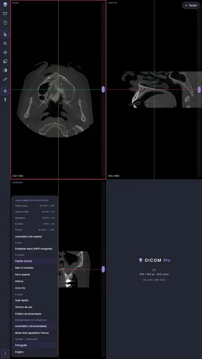
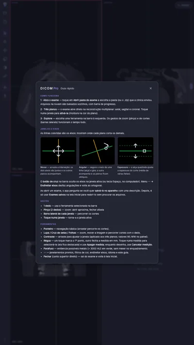

DICOM Pro: Visualizador de exames DICOM · DICOM exam viewer
Reconstrução multiplanar, medições e filtros — no seu tablet ou celular. Multiplanar reconstruction, measurements and filters — on your tablet or phone.
Aviso · Notice
Para ensino, estudo e referência — não se destina a diagnóstico, laudo ou decisão clínica.
For teaching, study and reference — not intended for diagnosis, reporting or clinical decision-making.
- Processamento no aparelho
- Sem conta
- Sem anúncios
- Sem rastreadores
- Português e inglês
Processed on the device · No account · No ads · No trackers · Portuguese and English
O que ele faz · What it does
Exames DICOM no tablet ou no celular.DICOM exams on your tablet or phone.
O app lê os exames no padrão DICOM que você escolhe e faz todo o processamento no próprio aparelho — nada vai para servidores da OakAppWare.
The app reads the DICOM exams you choose and does all the processing on the device itself — nothing goes to OakAppWare servers.
-
Reconstrução multiplanar Multiplanar reconstruction
Axial, sagital e coronal lado a lado, com eixos móveis: as linhas de eixo coloridas ligam um plano ao outro, e as alças servem para mover, angular e ajustar a espessura.
Axial, sagittal and coronal side by side, with movable axes: colored axis lines link one plane to another, and handles let you move, angle and adjust thickness.
- Axial
- Sagital
- Coronal
-
Medições em milímetros Measurements in millimeters
Medições lineares em milímetros, feitas sobre a imagem.
Linear measurements in millimeters, taken on the image.
As medidas em milímetros vêm da calibração do próprio exame — ver Termos de Uso, item 3. Measurements in millimeters come from the exam’s own calibration — see Terms of Use, item 3.
-
Janelamentos prontos e filtros de cor Window presets and color filters
No menu, escolha um janelamento específico ou um filtro, como o de raio-X invertido.
From the menu, pick a specific window preset or a filter, such as inverted X-ray.
-
Realce de regiões de alta densidade High-density highlighting
As regiões de altíssima densidade aparecem pintadas de verde sobre a imagem em cinza, sem mexer no enquadramento.
Very high-density regions are painted green over the grayscale image, without changing the framing.
-
Exames salvos no aparelho Exams saved on the device
Os exames ficam salvos no próprio aparelho, para reabrir em segundos.
Exams stay saved on the device itself, ready to reopen in seconds.
-
Guia ilustrado, em português e inglês Illustrated guide, in Portuguese and English
Um guia rápido mostra como funciona, as janelas e os eixos, os gestos e as ferramentas.
A quick guide covers how it works, windows and axes, gestures and tools.
-
O app não envia dados para servidores da OakAppWare The app does not send data to OakAppWare servers
- Sem conta
- Sem nuvem do desenvolvedor
- Sem anúncios
- Sem rastreadores
No account, no developer cloud, no ads, no trackers.
Política de Privacidade do DICOM Pro
Telas reais · Real screens
Capturas do appScreenshots
Telas do aplicativo em português, num aparelho de tela estreita, em tamanho de leitura.
App screens in Portuguese, on a narrow-screen device, at reading size.




Role para o lado para ver as cinco telas. Scroll sideways to see all five.
Documentos · Documents
Suporte, privacidade e termosSupport, privacy and terms — in Portuguese and English
Estude exames DICOM no seu aparelho.
Processamento no próprio aparelho, sem conta e sem anúncios. Processed on the device, no account, no ads.
Para ensino, estudo e referência — não se destina a diagnóstico, laudo ou decisão clínica. For teaching, study and reference — not intended for diagnosis, reporting or clinical decision-making.
um app OakAppWare